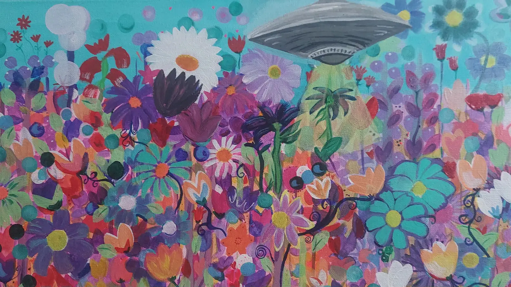
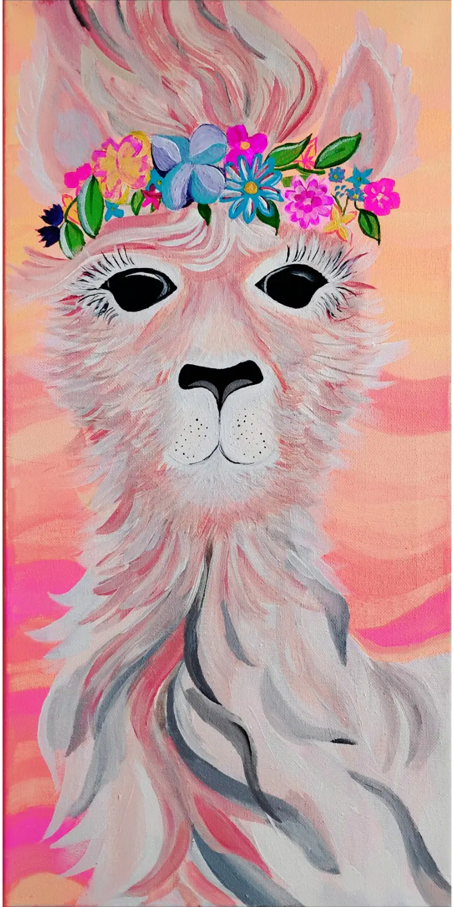
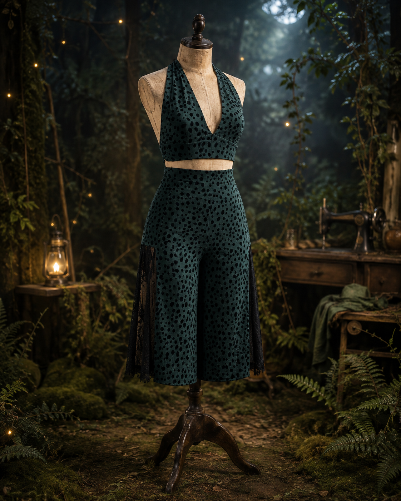
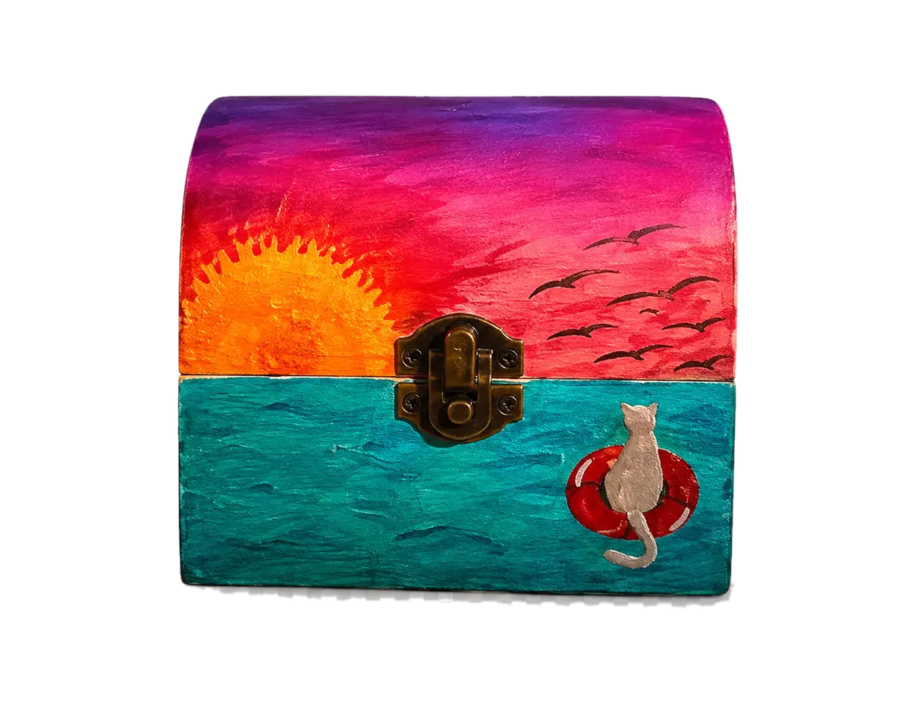
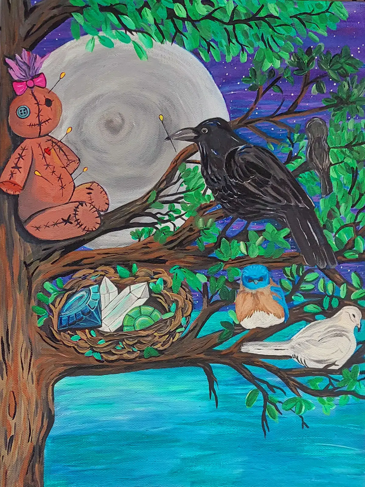
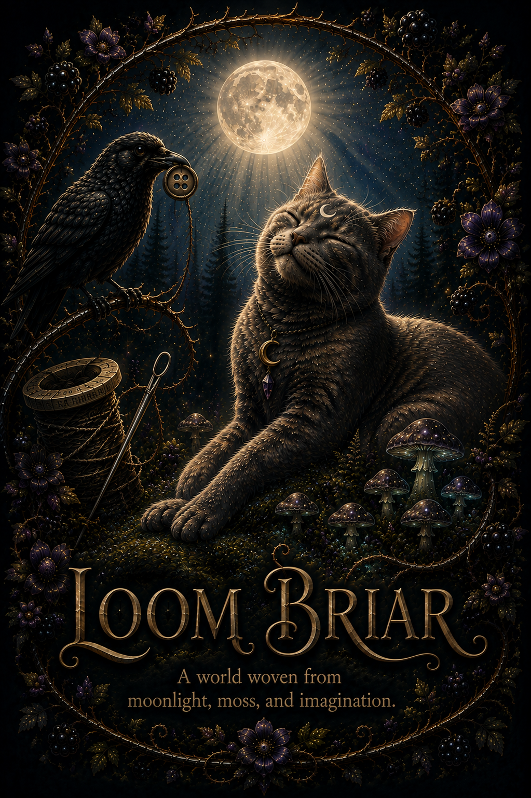

Tiny living gardens
Succulent Cupcakes
Real succulents and cacti planted by hand in decorative cupcake-style cups.
$10 each
A decorative kitten chases a ball of yarn down the path as the page scrolls.
Enter the Briar
A world woven from moonlight, moss, and imagination.
Tiny living gardens
Real succulents and cacti planted by hand in decorative cupcake-style cups.

Original painting
The artwork behind the jewel-bright meadow along the path.

Original painting · For sale
A flower-crowned spirit in peach, coral, powder blue, and cream.

Handcrafted wearable
Deep forest teal, velvet-shadowed spots, and sweeping black lace.

Thermochromic keepsake
A quiet cat watches the horizon while the painted surface changes with warmth.

Original painting · For sale
A moonlit woodland story of buttons, birds, crystals, and hidden magic.

Thermochromic keepsake
A moonlit keepsake whose painted colors transform with warmth.

Muse of the Briar Woods
The moon-marked spirit behind Loom Briar—watchful, elegant, and forever woven into the woods.